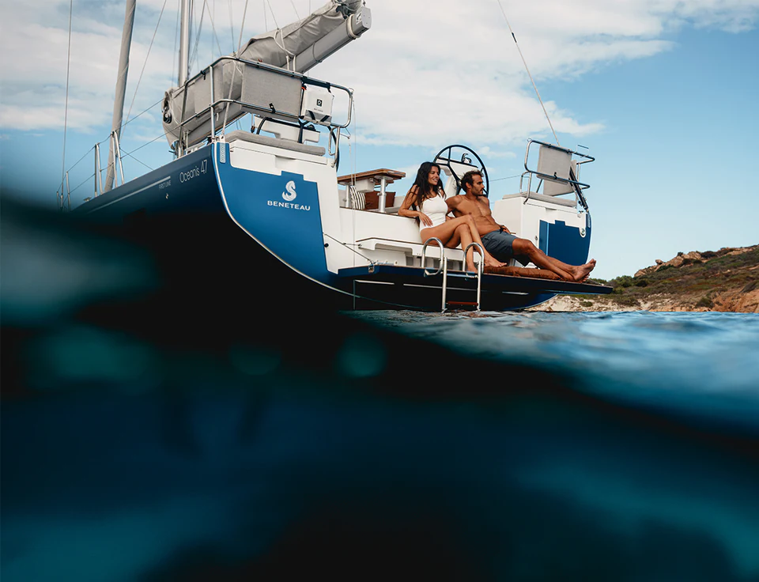
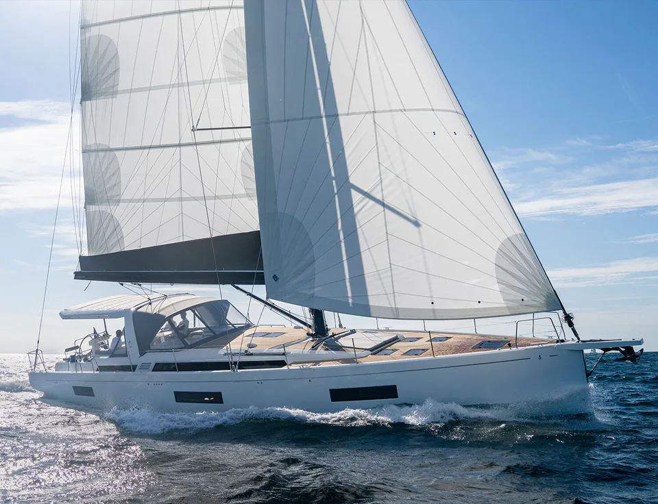
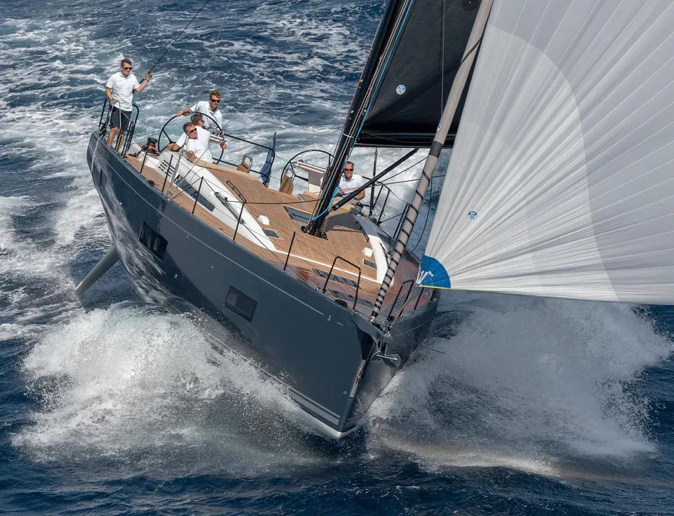
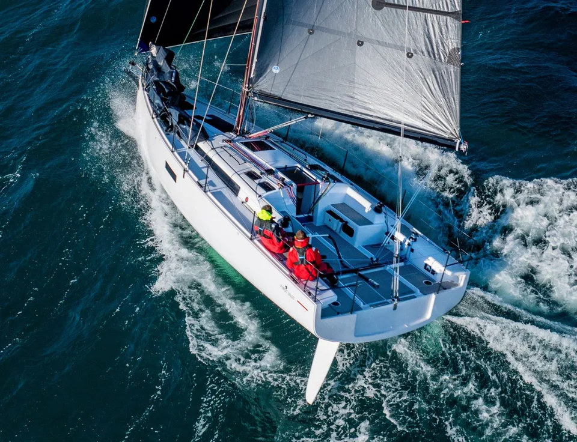
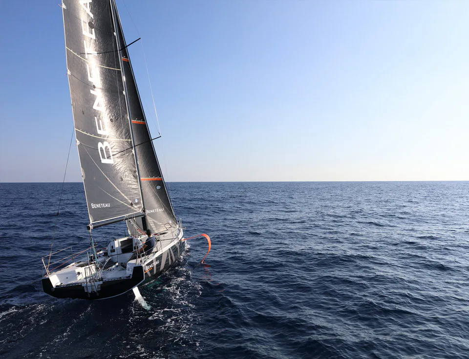
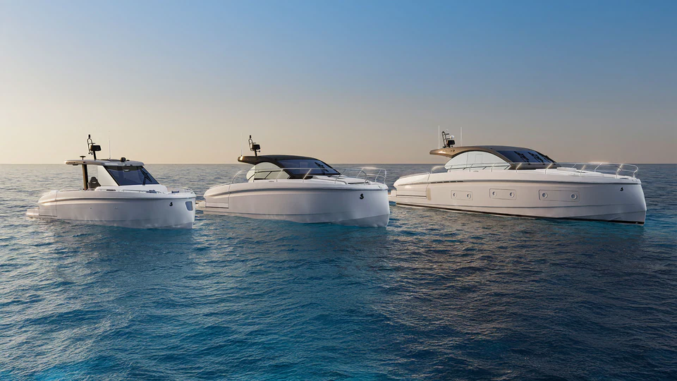
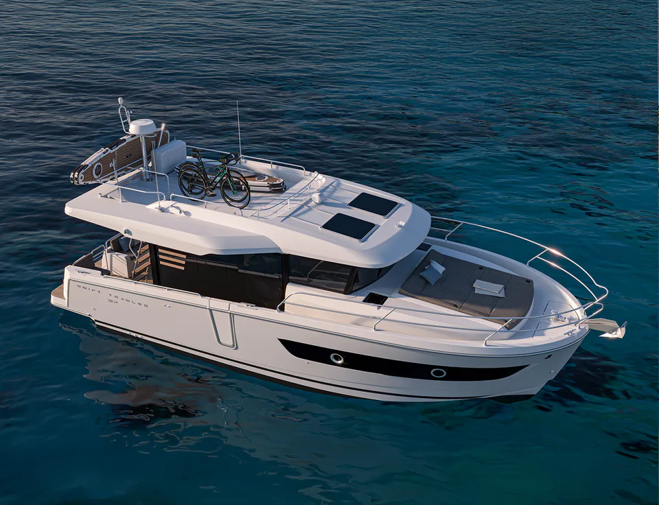
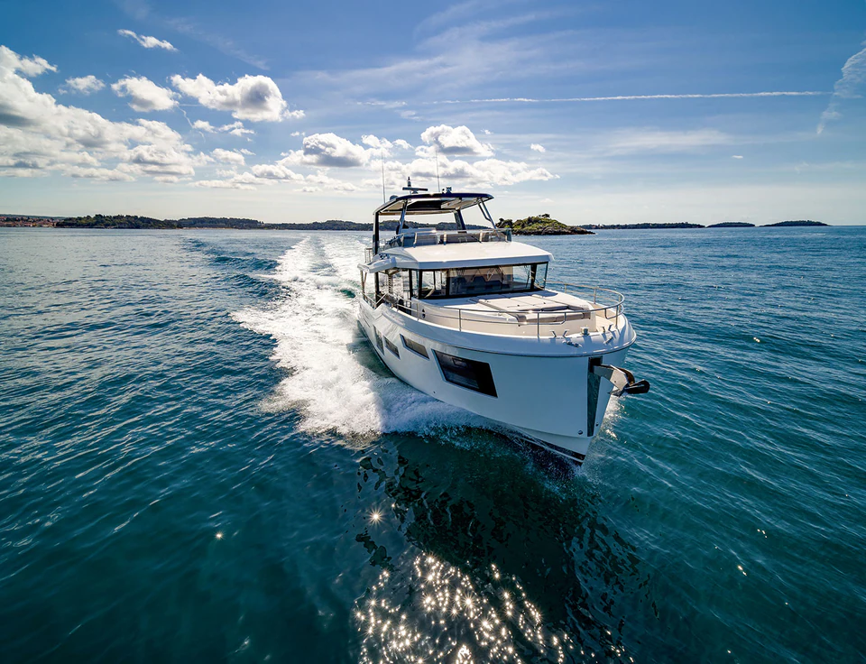
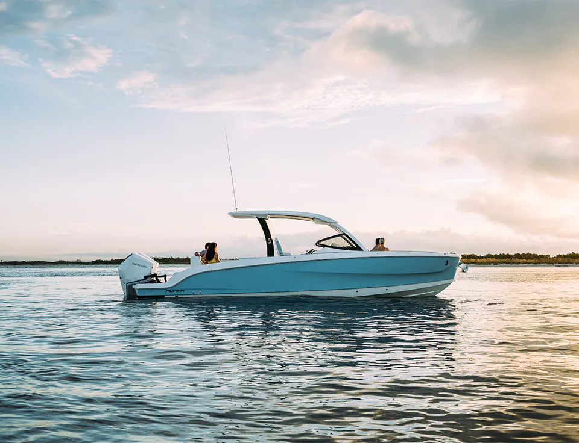
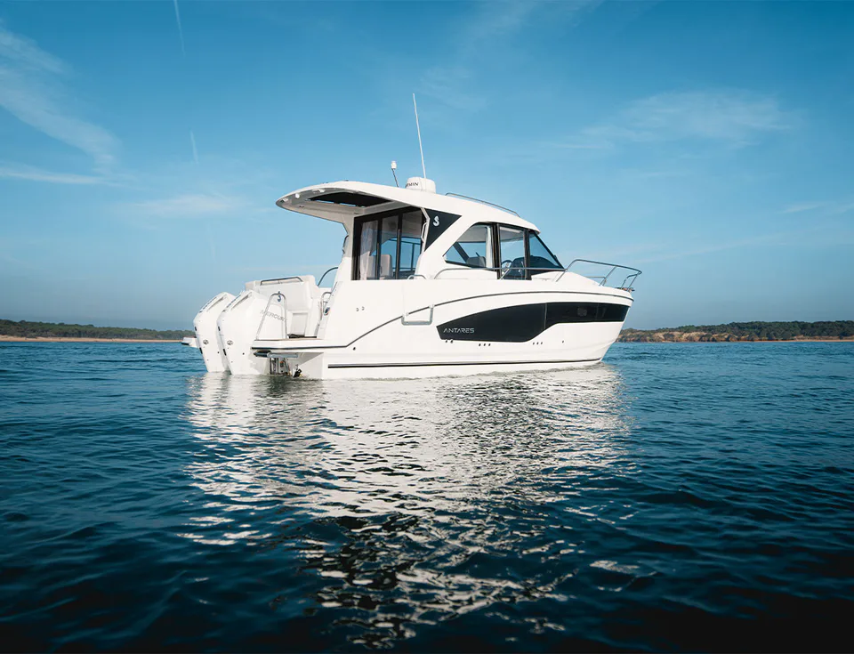

Which seais yours?
BENETEAU builds 52 boats in 10 families, in three worlds: sailing yachts, motor yachts and dayboats.
Every family,under sail.
01 / 05






Swift Trawler
Six trawlers, from the 37 to the 54, in Sedan and Fly versions.



Lengths as published on beneteau.com. Models marked Explore here open in this concept; the others open on beneteau.com.
How longis each one?
From the Gran Turismo 35 at 11.2 metres to the First 60 at 18.95 metres, drawn on one ruler, length overall.